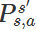

强化学习是系统从环境学习以使得奖励最大的机器学习。强化学习和有监督学习的不同在于教师信号。强化学习的教师信号是动作的奖励，有监督学习的教师信号是正确的动作。
马尔科夫决策过程
马尔科夫决策过程
要说强化学习，就必须说说马尔科夫决策过程 (Markov Decision Processes, MDP)。马尔可夫决策过程是基于马尔可夫过程理论的随机动态系统的决策过程，其分五个部分：
- SS 表示状态集 (states)；
- AA 表示动作集 (Action)；
- Ps′s,a  表示状态 s 下采取动作 a 之后转移到 s' 状态的概率；
- Rs,a
 表示状态 s 下采取动作 a 获得的奖励；
表示状态 s 下采取动作 a 获得的奖励； - γ
 是衰减因子。
是衰减因子。
和一般的马尔科夫过程不同，马尔科夫决策过程考虑了动作，即系统下个状态不仅和当前的状态有关，也和当前采取的动作有关。
下棋的例子，当我们在某个局面（状态s）走了一步 (动作 a )。这时对手的选择（导致下个状态 s’ ）我们是不能确定的，但是他的选择只和 s 和 a 有关，而不用考虑更早之前的状态和动作，即 s’ 是根据 s 和 a 随机生成的。
马尔科夫决策过程是强化学习的理论基础。不管我们是将强化学习应用于五子棋游戏、星际争霸还是机器人行走，我们都假设背后存在了一个马尔科夫决策过程。只不过有的时候我们知道马尔科夫决策过程所有信息(状态集合，动作集合，转移概率和奖励)，有的时候我们只知道部分信息 (状态集合和动作集合)，还有些时候马尔科夫决策过程的信息太大无法全部存储 (比如围棋的状态集合总数为 319×19 )。强化学习算法按照上述不同情况可以分为两种:
- 基于模型 (Model-based)
- 非基于模型 (Model-free)
基于模型的强化学习算法是知道并可以存储所有马尔科夫决策过程信息，非基于模型的强化学习算法则需要自己探索未知的马尔科夫过程。
策略和价值
强化学习技术是要学习一个策略 (Policy)。这个策略其实是一个函数，输入当前的状态 s，输出采取动作 a 的概率 π(s,a) 。
π(s,a) 。
π(s,a) 。- 强化学习的目标是什么呢？
假设我们的系统在一个状态 s 中，我们不会选择当前奖励 Rs,a 最大的动作 a。因此这个动作可能导致系统进入死胡同，即系统之后会受到很大的处罚。为了避免这种情况，策略要考虑到后续的影响。因此我们最大化递减奖励的期望
Rs,a 最大的动作 a。因此这个动作可能导致系统进入死胡同，即系统之后会受到很大的处罚。为了避免这种情况，策略要考虑到后续的影响。因此我们最大化递减奖励的期望
Rs,a 最大的动作 a。因此这个动作可能导致系统进入死胡同，即系统之后会受到很大的处罚。为了避免这种情况，策略要考虑到后续的影响。因此我们最大化递减奖励的期望
其中  γ 是马尔科夫决策过程的第五个部分：衰减因子。 γ 用于平衡当前奖励和远期奖励的重要性，
γ 是马尔科夫决策过程的第五个部分：衰减因子。 γ 用于平衡当前奖励和远期奖励的重要性， 也是用来避免计算结果无穷。 Rk 是系统在当前策略下第 k 步之后获得的奖励。这种目标既考虑了当前奖励又考虑了远期奖励，避免了下一个状态是死胡同的问题。
也是用来避免计算结果无穷。 Rk 是系统在当前策略下第 k 步之后获得的奖励。这种目标既考虑了当前奖励又考虑了远期奖励，避免了下一个状态是死胡同的问题。
γ 是马尔科夫决策过程的第五个部分：衰减因子。 γ 用于平衡当前奖励和远期奖励的重要性，也是用来避免计算结果无穷。 Rk 是系统在当前策略下第 k 步之后获得的奖励。这种目标既考虑了当前奖励又考虑了远期奖励，避免了下一个状态是死胡同的问题。 一个策略下的一个状态的价值定义：这个状态下，按照这个策略，系统能够获得的递减奖励期望。

- 强化学习希望把策略训练什么样呢？
后来人们进一步扩展了价值的概念，将价值扩展到状态-动作对上。一个状态-动作对的价值定义如下所示。

理解：策略（平衡进行当前动作以及后续的动作所带来相关状态的奖励和惩罚）
最优策略存在性和贝尔曼等式

强化学习算法的目标就是找到最优策略 :
一个所有状态价值大等于其他所有的状态价值

贝尔曼等式
贝尔曼登等式表明了当前状态的值函数与下个状态的值函数的关系，具有很简明的形式。

模型相关的强化学习
模型相关是我们知道整个马尔科夫决策过程。
模型相关的强化学习算法主要有：
- 策略迭代 (Policy Iteration)
- 价值迭代 (Value Iteration)
1. 策略迭代
策略迭代的主要思想是这样的。先随机初始化一个策略 (\pi_0)，计算这个策略下每个状态的价值 (\pmb{v}_0)；根据这些状态价值得到新策略 (\pi_1)；计算新策略下每个状态的价值 (\pmb{v}_1) ... 直到收敛。计算一个策略下每个状态的价值，被称为策略评估 (Policy Evaluation)；根据状态价值得到新策略，被称为策略改进 (Policy Improvement)。
理接：策略可以表示为一条路径，迭代表示调整当前的路径，得到一条新的路径，求得路径上所有状态的价值的和，根据这些价值来调整当前的策略（路径），直至这个和收敛
1.1 策略评估
策略评估利用了贝尔曼等式。根据贝尔曼等式，一个状态的价值和它后续状态的价值有关。因此我们用后续状态价值 (v(s')) 去更新当前状态的价值 (v(s))。策略评估遍历所有状态，按照下面公式更新其价值。
\begin{eqnarray}
v(s) = \sum_{a \in A}\pi(s,a)(R_{s,a}+\gamma \sum_{s' \in S}T_{s,a}^{s'}v_{t}(s')) \nonumber
\end{eqnarray}
1.2 策略改进
根据状态价值得到新策略，被称为策略改进。对于一个状态s，让策略选择一个动作a，使得当前状态的价值 (R_{s,a}+\gamma \sum_{s' \in S}T_{s,a}^{s'}v(s') ) 最大，即
\begin{eqnarray}
\pi_{i+1}(s,a) =
\left{\begin{matrix}
1 & a = argmax_{a}R_{s,a}+\gamma \sum_{s' \in S}T_{s,a}^{s'}v(s') \
0 & a \neq argmax_{a}R_{s,a}+\gamma \sum_{s' \in S}T_{s,a}^{s'}v(s')
\end{matrix}\right. \nonumber
\end{eqnarray}
2. 价值迭代
把策略评估和策略改进结合得更紧密一些。一个状态下选择动作一旦确定，立刻按照这个动作计算当前状态的价值。这个做法其实就是价值迭代。价值迭代一直执行直到收敛，从而获得最优策略。
模型无关 (Model-free) 的强化学习
模型无关的策略评价
不知道马尔科夫决策过程转移概率和奖励函数的情况下，计算一个策略的每一个状态价值。模型无关的策略评价主要有两种算法
- 蒙特卡罗算法
- 时差学习算法。
蒙特卡罗算法
一听到这个名字，我们就知道一个产生样本，通过样本计算状态价值的方法。
算法流程：
- 首先，用当前策略探索产生一个完整的状态-动作-奖励序列。

- 在序列第一次碰到或者每次碰到一个状态s时，计算其衰减奖励之后。

- 更新状态价值

时差学习算法
有时我们面临的强化学习问题是持续不断的。比如没有停止指令时，飞行器控制要求不停地根据姿势风向等因素调整，持续保持平稳飞行。
这时我们得不到一个完整状态-动作-奖励系列
时差学习算法利用马尔科夫性质，只利用了下一步信息。时差学习算法让系统按照策略指引进行探索，在探索每一步都进行状态价值的更新，更新公式如下所示。


模型无关的策略学习
模型无关的策略学习，是在不知道马尔科夫决策过程的情况下学习到最优策略。
主要有三种算法:
- MC Control,
- SARSA
- Q learning。
解决办法是把工作对象换成状态-动作价值 qq，获得最优策略的状态-动作价值 qq 之后，对于状态 s 最优策略如下所示。

最优策略是贪婪策略，这个不用怀疑。为了鼓励探索，我们用了另一种 ϵ− 贪婪策略，其公式如下。

MC Control
一听到 Monte Carlo Control (MC Control) 这个名字，我们就知道，这个算法生成样本然后根据样本计算状态-动作价值。